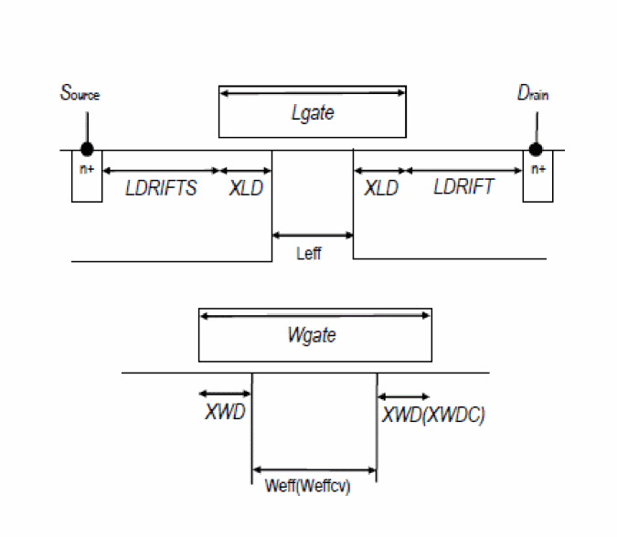

Model Usage
Determination of the node sequence is:
Drain = 1, Gate = 2, Source = 3, Substrate = 4
If COBCNODE = 1 Body = 5, Thermal = 6
The effective channel length LLeff and width Weff are calculated from the gate length Lgate and width Wgate, where Lgate, and Wgate are related to the drawn gate length Ldrawn and width Wdrawn as:
where XLD and XWD account for the overlaps of source/drain contact and the gate oxide. The model parameter XWDCis introduced to describe the different width dependence of capacitances from currents. If the value is not given, the same value as XWD is taken. NF is the number of fingers.
Figure -3 Cross section of the device structure

Table -1 HiSIM SOI model parameters indicates parameters
For any questions, contact Cadence Customer Support.
Return to top